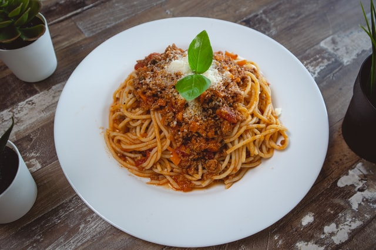

Meaty Spaghetti

Pinoy Meaty Spaghetti Recipe
Meaty Spaghetti is a meaty variant of traditional Filipino spaghetti. This is one of my favorite versions. I enjoy the flavor of the sauce. It's sweet, meaty, and bursting with flavor. This reminds me of the spaghetti from a renowned fast food restaurant where I grew up.
Filipino spaghetti can be made in a variety of ways. The bulk of these versions have a strong meaty flavor, and they all have a sweet component to them. It's the same with this dish. This version, in my opinion, has a lot of potential. Give it a go and let me know what you think.
Ingredients
- 400 grams spaghetti
- 2 tbsp oil
- 1 pc onion
- 5 cloves garlic
- ½ kg ground pork
- 2 pcs Knorr Pork Broth Cubes
- 2 tbsp tomato paste
- 500 grams tomato sauce
- ½ cup sugar
- ½ tsp pepper
- 1 cup water
- salt to taste
Steps
- To begin, follow the package guidelines for cooking the spaghetti noodles. Drain the water thoroughly and leave it aside. Save some of the pasta water for later.
- After that, find a pan and heat it up over medium heat. Pour some oil and toss in the onions and garlic. Cook until a light brown color appears. Then add the ground pork and cook until the color changes.
- Before adding the tomato paste and tomato sauce, thoroughly mix in the Knorr Pork Cubes. 2 minutes of sautéing.
- Add the sugar, pepper, and water and continue to cook for another 15-20 minutes, or until the sauce has slightly thickened. Season with salt and pepper to taste. If desired, more sugar can be added. You can also add starch and body to the sauce with the remaining pasta water.
- The finest part is still to come! Prepare a large tray for the cooked spaghetti noodles, then pour the sauce over them and top with your preferred shredded cheese. And that, my friends, is our dish!
- There is always a party when there is meaty spaghetti. Have this any day of the week and you will surely have a treat!